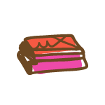

Angela Silva
25 anos, Pernambuco
UX Researcher
Publicitária, pesquisadora centrada no humano e em estudos antropológicos sobre a sociedade, consumo e tecnologia. Estudante assídua de UX Research e metodologias de Consumer Insight, Customer Centricity e Netnography. Para além, possuo conhecimentos teóricos e práticos, em JavaScript, HTML e CSS.
